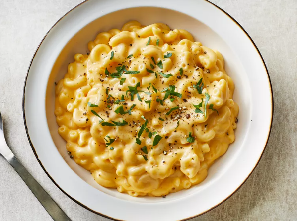

Macaroni and Cheese

Description
Looking for a homemade alternative to boxed mac and cheese that's just as
quick and easy? This stovetop mac and cheese uses staple ingredients and
comes together in just 25 minutes.
Ingredients
- 1 (8 ounce) box elbow macaroni
- 1/4 cup butter
- 1/4 cup all-purpose flour
- 1/2 teaspoon salt
- ground black pepper to taste
- 2 cups milk
- 2 cups shredded Cheddar cheese
Steps
-
Bring a large pot of lightly salted water to a boil. Cook elbow macaroni
in the boiling water.
- At the same time, melt butter in a saucepan over medium heat.
-
Add flour, salt, and pepper and stir until smooth, about 5 minutes.
- Pour in milk slowly, while stirring continuously.
- Add Cheddar cheese and stir until melted, 2 to 4 minutes.
- Drain macaroni and fold into cheese sauce until coated.